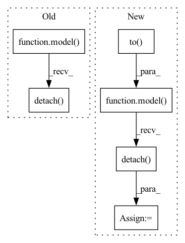

Pattern ID :35252

Before Change
batch, targets, lengths
) //// sorts the batch wrt the length of sequences
pred = model(
torch.autograd.Variable(batch).to(device), lengths.cpu().numpy()
) //// perform forward pass
pred = torch.squeeze(pred)
loss = criterion(
pred.to(device), torch.autograd.Variable(targets.float()).to(device)
) //// compute loss
pred_val = pred >= 0.5 //// get predictions
y_true += list(targets.int())
y_pred += list(pred_val.data.int().detach().cpu().numpy())
total_loss += loss
acc = accuracy_score(y_true, y_pred) //// computing accuracy using sklearn"s function
After Change
_,
) in data_loader["val_loader"]:
//// perform forward pass
pred = model(
sent1.to(device),
sent2.to(device),
sents1_len.to(device),
sents2_len.to(device),
)
//// compute loss
loss = criterion(
pred.to(device), torch.autograd.Variable(targets.float()).to(device)
)
y_true += list(targets.float())
y_pred += list(pred.data.float().detach().cpu().numpy())
total_loss += loss
//// computing accuracy using sklearn"s function
acc = r2_score(y_true, y_pred)
In pattern: SUPERPATTERN
Frequency: 3
Non-data size: 6
Instances
Fragment ID: 100298283
Project Name: shahrukhx01/siamese-nn-semantic-text-similarity
Commit Name: f3d054dd14ef532c408b1306c3341115777ac22f
Time: 2021-12-30
Author: sk28671@gmail.com
File Name: siamese_sts/trainer/train.py
M Class Name: AnonimousClass
N Class Name: AnonimousClass
M Method Name: evaluate_dev_set(5)
N Method Name: evaluate_dev_set(5)
M Parent Class:
N Parent Class:
M File Name: siamese_sts/trainer/train.py
N File Name: siamese_sts/trainer/train.py
M Start Line: 78
M End Line: 95
N Start Line: 91
N End Line: 116
'>
Before Change
model.zero_grad()
pred = model(
torch.autograd.Variable(batch).to(device), lengths.cpu().numpy()
) //// perform forward pass
pred = torch.squeeze(pred)
loss = criterion(
pred.to(device), torch.autograd.Variable(targets.float()).to(device)
) //// compute loss
loss.backward() //// perform backward pass
optimizer.step() //// update weights
pred_val = pred >= 0.5 //// get predictions
y_true += list(targets.int().numpy()) //// accumulate targets from batch
y_pred += list(
pred_val.data.int().detach().cpu().numpy()
) //// accumulate preds from batch
total_loss += loss //// accumulate train loss
After Change
model.zero_grad()
//// perform forward pass
pred = model(
sent1.to(device),
sent2.to(device),
sents1_len.to(device),
sents2_len.to(device),
)
//// compute loss
loss = criterion(
pred.to(device), torch.autograd.Variable(targets.float()).to(device)
)
//// perform backward pass
loss.backward()
//// update weights
optimizer.step()
//// accumulate targets from batch
y_true += list(targets.float().numpy())
//// accumulate preds from batch
y_pred += list(pred.data.float().detach().cpu().numpy())
//// accumulate train loss
total_loss += loss
'>
Fragment ID: 100298271
Project Name: shahrukhx01/siamese-nn-semantic-text-similarity
Commit Name: f3d054dd14ef532c408b1306c3341115777ac22f
Time: 2021-12-30
Author: sk28671@gmail.com
File Name: siamese_sts/trainer/train.py
M Class Name: AnonimousClass
N Class Name: AnonimousClass
M Method Name: train_model(6)
N Method Name: train_model(6)
M Parent Class:
N Parent Class:
M File Name: siamese_sts/trainer/train.py
N File Name: siamese_sts/trainer/train.py
M Start Line: 16
M End Line: 47
N Start Line: 16
N End Line: 59
'>
Before Change
mapping = rematch(text, token)
token_ids = torch.unsqueeze(torch.LongTensor(input_ids), 0).to(device)
attention_mask = torch.unsqueeze(torch.LongTensor(encode_results.get("attention_mask")), 0).to(device)
bert_hidden_states = bert_model(token_ids, attention_mask=attention_mask)[0].to(device)
model_outputs = model(bert_hidden_states).detach().to("cpu")
decision_threshold = float(configs.decision_threshold)
for model_output in model_outputs:
start = np.where(model_output[:, :, 0] > decision_threshold)
After Change
mapping = rematch(text, token)
token_ids = torch.unsqueeze(torch.LongTensor(input_ids), 0).to(device)
attention_mask = torch.unsqueeze(torch.LongTensor(encode_results.get("attention_mask")), 0).to(device)
model_outputs = model(token_ids, attention_mask).detach().to("cpu")
decision_threshold = float(configs.decision_threshold)
for model_output in model_outputs:
start = np.where(model_output[:, :, 0] > decision_threshold)
'>
Fragment ID: 100298275
Project Name: stanleylsx/entity_extractor_by_binary_tagging
Commit Name: 52160cd75adbf8178b4b10009ffcc81d61979e98
Time: 2021-07-08
Author: gzlishouxian@gmail.com
File Name: engines/predict.py
M Class Name: AnonimousClass
N Class Name: AnonimousClass
M Method Name: extract_entities(5)
N Method Name: extract_entities(6)
M Parent Class:
N Parent Class:
M File Name: engines/predict.py
N File Name: engines/predict.py
M Start Line: 13
M End Line: 25
N Start Line: 22
N End Line: 24